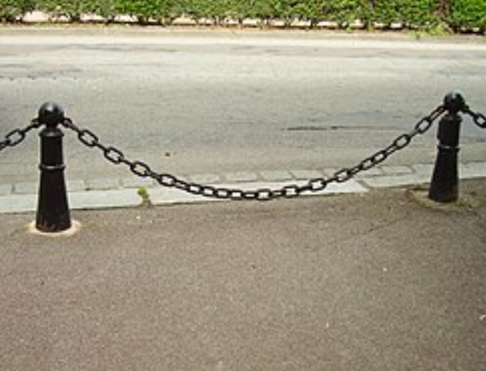
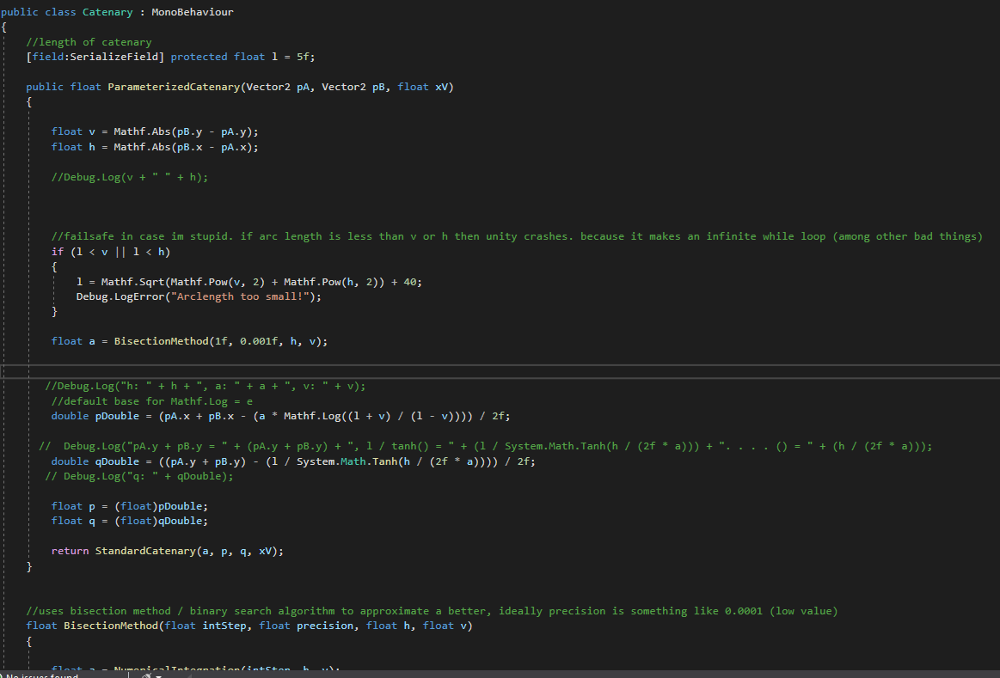
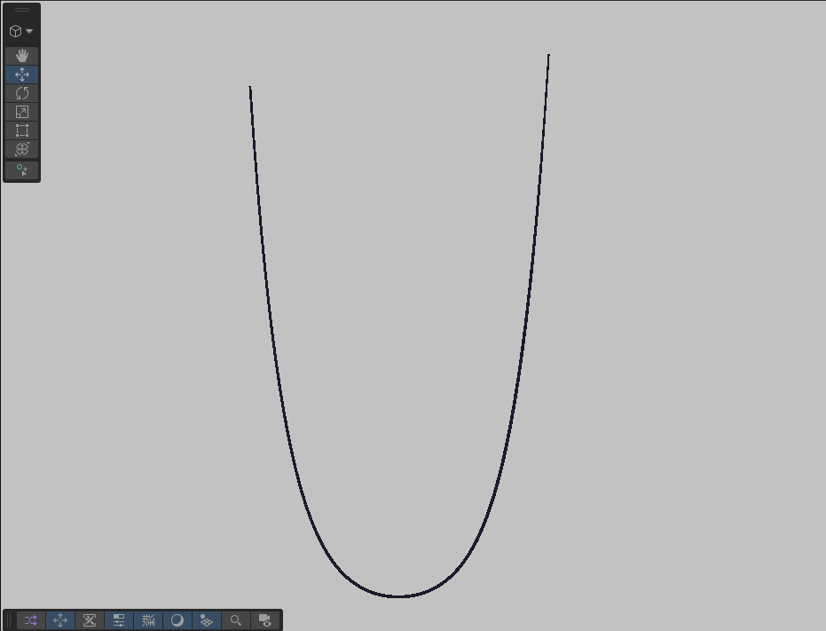
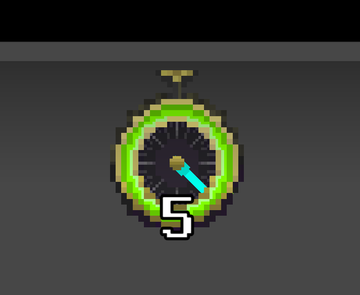
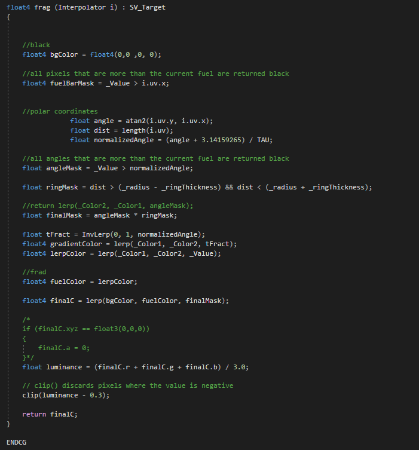
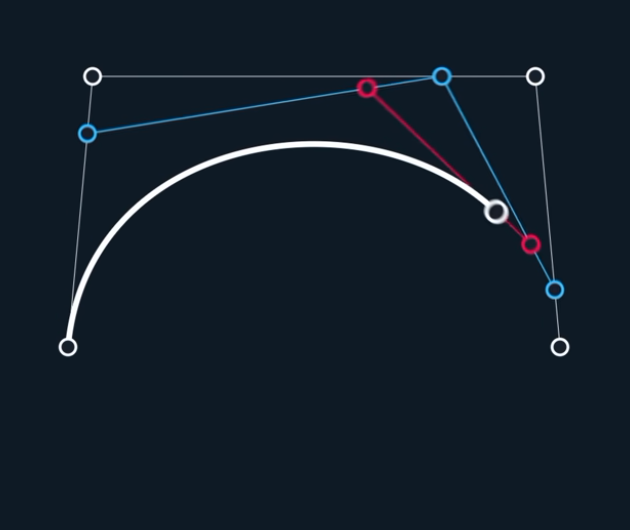
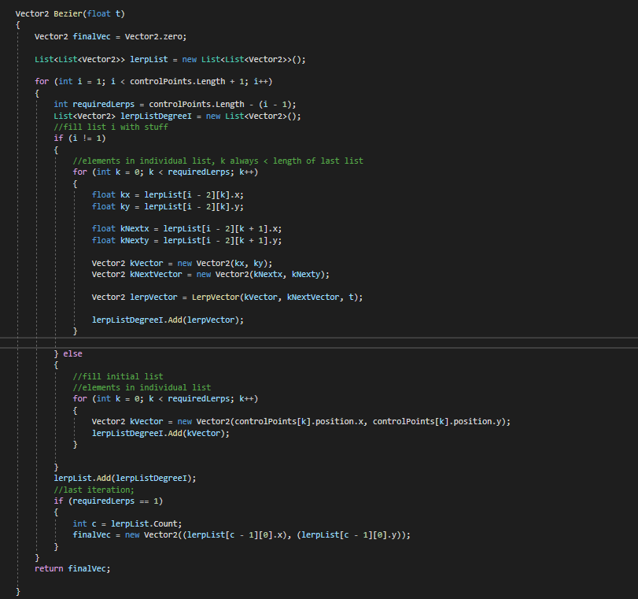
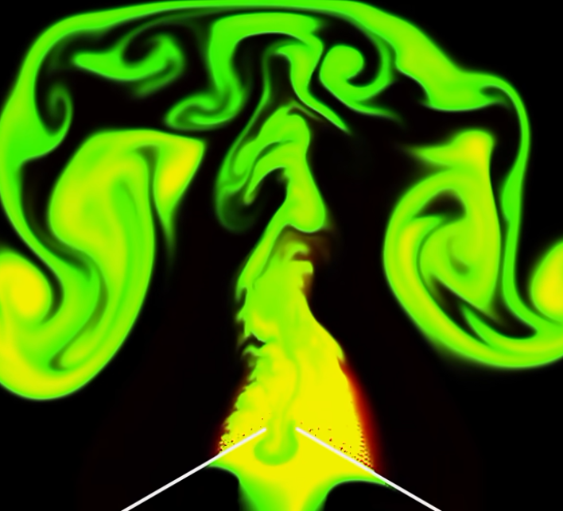

Image from Wikipedia
I wanted to put ziplines in Steelsmoke, because I thought that would be cool. So naturally I decided to invest tons and tons of effort into learning and engineering such a thing.
Alan Zucci wrote an amazing articleon the catenary curve, which I followed while trying to render it.
Additionally, I watcheda videoon the derivation of the catenary curve, which helped me understand the more complex mathematics behind it.
First I had to understand the raw calculus, then I had to parameterize the catenary curve between two points, which was VERY confusing. But fun!

Sneek peek of some of the code involved.

Final result! Looks great!
There is an ongoing issue of the catenary being offset on the y-axis by a large amount, but I have a working band-aid fix in place. It's nothing wrong with the base math itself. Just my own silly mistakes.

The UI in steelsmoke covered up too much of the screen. In a game which places so much emphasis on the world and exploring, you need to be able to see!
So I devised a plan for the UI-- specifically, a specific ring to represent your health. Instead of massive health bars, you would just see a tiny circle!
I wanted to minimize animation/art files so I opted for the math method instead-- programming a healthbar! I had tangoed with shader programming before, but this was entirely new.
Before now I hadn't worked with polar stuff that much. Moreover, a lot of shader code is interpolation and bare math. I followedFreya Holmer's Shader Lecturesas well asa tutorial for simple shaders.
Ring Demo.
I won't outline all of my code, because some stuff is just too complicated, and other people explain it better. I dont want to be misleading.

1. First you draw the edge of a circle.
2. Along the edge, select a region to fill in-- this region is your thickness!
3. Cut the ring at a certain angle depending on your health.

Credit to Freya Holmer.
Making smooth curves is nice and useful. For my purposes, I just wanted some cute decoration in steelsmoke-- wires that dont involve weird catenaries. Visually speaking, a cubic bezier curve and catenary curve look very similar.
I primarily learned from Freya Holmer'sBeauty of Bezier Curvesvideo. Then after learning the math, I simply wrote the code and that was that!
I am very proud of this coding project; it is very smooth and I used very little tutorials. Freya Holmer's documentary was all mathematical and involved zero code, meaning everything here came from my brain!!!.
Also it's just very nice to look at. I was able to animate these Bezier Curves by moving the control points with sine/cosine modulation.

Implementation of De Castelijau's Algorithm.
Interpolate until you run out things to interpolate!
I dont often use nested for loops in my code; this was very challenging and very rewarding. Considering this was without coding tutorials, it might be the best code I've done so far.

Credit to Sebastian Lague.
I'll just start off with the showcase:
I made this simulator with some tutorials,Jos Stam's Stable Fluids Paper, and Sebastian Lague'sSmoke Simulator, where he breaks down Jos Stam's paper.
I also watched several videos breaking down the Navier Stokes equations in an attempt to understand them.
The way I remember it working is that you would simulate smoke along a grid, and move smoke particles throughout this grid whilst obeying the laws drawn by the Naiver-Stokes equations. This means the divergence of the fluid is zero, and the pressure and velocity are constant.